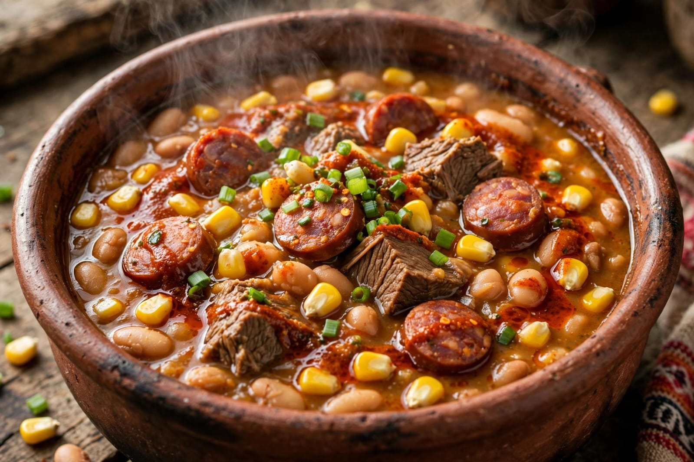

Informacion de la receta

Tiempo de coccion: 2 horas y 30 minutos
Porciones: 6 personas
Dificultad: Media
Ingredientes
- 500 g de maiz blaco
- 250 g de porotos
- 500 g de carne vacuna
- 250 g de pancetas
- 1 chorizo colorado
- 1 zapallo
- 2 papas
- 1 cebolla
- Sal a gusto
- Pimenton
- Comino
- Agua
Preparacion
- Dejarmel maiz y los porotos en remojo durante toda la noche.
- Agregar la carne, la panceta y el chorizo cortados en trozos.
- Incorporar el zapallo, las papas y la cebolla.
- Cocinar a fuego aproxidamente 2 horas y 30 minutos.
- Agregar sal, pimenton y comino a gusto.
- Revolver cada cierto tiempo para evitar que se pegue.
- Cocinar hasta que los ingredientes esten bien cocidos y el locro tenga una consistencia espesa.
- Servir caliente.
Recomendaciones
- Dejar lod porotos y el maiz en remojo previamente.
- Cocinar el locro a fuego lento para que los ingredientes se mezclen bien.
- Revolver cada cierto tiempo durante la coccion.
- Se puede acompañar con una salsa de grasita de retida y pimenton , tambien con cebolla de verdeo.
Para conocer mas sobre la gastronomia argentina, podes visitar Argentina.gob.ar